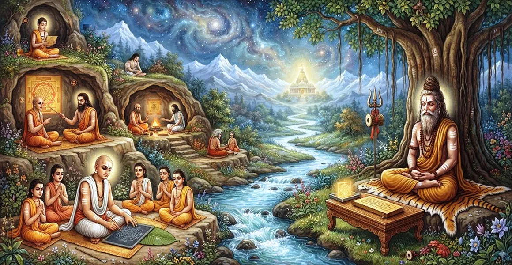

तपस्वी के रहस्यवादी आरेख को नियंत्रित करने वाले नियम
कैलाश संहिता के पांचवें अध्याय में पवित्र रहस्यवादी आरेख (यति मंडल) की सटीक तैयारी, ज्यामितीय अनुपात और अनुष्ठान महत्व का वर्णन किया गया है।
भगवान शिव बताते हैं कि कैसे पवित्र ज्यामिति एक ब्रह्मांडीय वेदी के रूप में कार्य करती है जहां दिव्य ऊर्जाएं उच्च स्तरीय चिंतनशील पूजा के लिए स्थापित होती हैं।
ये गूढ़ निर्देश तपस्वी को भौतिक स्थान को शिव-शक्ति अभिव्यक्ति की सक्रिय सीट में बदलने में सक्षम बनाते हैं।
अध्याय 5 की मुख्य बातें
पवित्र ज्यामिति
आरेख के लिए आवश्यक सटीक रेखाएं, संकेंद्रित वृत्त और वर्गाकार बाड़ों का विवरण।
शुद्ध सामग्री
ड्राइंग के लिए भस्म, खनिज पाउडर और सुगंधित पेस्ट के उपयोग को निर्दिष्ट करता है।
कमल संलग्नक
सर्वोच्च शिव के आसन के रूप में कार्यरत केंद्रीय आठ पंखुड़ियों वाले कमल डिजाइन की व्याख्या करता है।
मंगलाचरण संस्कार
मंडल के निर्दिष्ट बिंदुओं में देवताओं की उपस्थिति का आह्वान करने के लिए मंत्रों की रूपरेखा।
ब्रह्मांडीय संरेखण
प्रतीकात्मक रूपों के माध्यम से व्यक्तिगत चेतना को सार्वभौमिक सिद्धांतों से जोड़ता है।
आध्यात्मिक सुरक्षा
साधना के दौरान नकारात्मक प्रभावों को दूर करने के लिए ऊर्जावान सीमाएँ स्थापित करता है।
इस अध्याय में मुख्य विषय
पवित्र स्थल की तैयारी
रहस्यमय चित्र बनाने से पहले, तपस्वी गाय के गोबर, पवित्र जल और पवित्र मंत्रों से जमीन को शुद्ध करता है।
आध्यात्मिक ऊर्जा के अनुरूप स्थान शांत, स्वच्छ और पूर्व या उत्तर की ओर उन्मुख होना चाहिए।
ज्यामितीय डिज़ाइन और अनुपात
आरेख में पवित्र तारों का उपयोग करके सटीक माप की आवश्यकता होती है, जिससे प्रवेश द्वार और आंतरिक वृत्तों के साथ एक बाहरी वर्ग बनता है।
प्रत्येक रेखा एक मौलिक सीमा का प्रतिनिधित्व करती है, जो स्थूल जगत का एक अखंड सूक्ष्म-ब्रह्मांडीय प्रतिबिंब बनाती है।
पवित्र चूर्ण और रंगद्रव्य
यह चित्र भस्म, चावल के आटे, हल्दी, कुचली हुई पत्तियों और गहरे खनिजों से प्राप्त पांच पवित्र रंगों से भरा हुआ है।
ये पांच रंग पांच तत्वों (पंच महाभूतों) और भगवान शिव के पांच चेहरों (पंचब्रह्मा) का प्रतीक हैं।
केंद्रीय कमल का प्रतीकवाद
केंद्र में आठ पंखुड़ियों वाला कमल है जो हृदय केंद्र और अव्यक्त सर्वोच्च वास्तविकता का प्रतिनिधित्व करता है।
कमल की परिधि वेदी के रूप में कार्य करती है जहाँ शिव और शक्ति पूर्ण अद्वैत मिलन में रहते हैं।
मण्डल में देवताओं की प्रतिष्ठा
दिशाओं, तत्वों और आध्यात्मिक शक्तियों की रक्षा करने वाले विशिष्ट देवताओं का आह्वान यंत्र के निर्दिष्ट खंडों में किया जाता है।
प्रणव और बीज मंत्रों के माध्यम से, आरेख एक खींचे गए पैटर्न से एक जीवित आध्यात्मिक भंवर में बदल जाता है।
ध्यान और पूजा की प्रक्रिया
अभ्यासकर्ता केंद्र में अनुष्ठानिक फूल चढ़ाने के साथ-साथ सूक्ष्म आंतरिक मानसिक पूजा (अंतर-यगा) प्रदान करता है।
केंद्रीय बिंदु (बिंदु) पर ध्यान करने से द्वैतवादी धारणा समाप्त हो जाती है, जिससे मन तल्लीनता (समाधि) की ओर बढ़ जाता है।
अध्याय 6 की ओर
बाहरी रहस्यमय आरेख के निर्माण और अभिषेक के साथ, पाठ निर्बाध रूप से अध्याय 6, 'त्याग के मार्ग में न्यास के नियम' में परिवर्तित हो जाता है।
अध्याय 6 आंतरिक शरीर अभिषेक (न्यासा) की रूपरेखा देता है, जो मंडल की दिव्य ऊर्जा को सीधे तपस्वी के भौतिक और सूक्ष्म शरीर में मैप करता है।
अध्याय 5 की मुख्य शिक्षाएँ
साधना में परिशुद्धता
सटीक माप आध्यात्मिक उन्नति के लिए आवश्यक क्रम और सामंजस्य को दर्शाते हैं।
मौलिक सद्भाव
प्राकृतिक रंगों का उपयोग अभ्यासकर्ता को ब्रह्मांडीय शक्तियों के साथ सामंजस्य स्थापित करता है।
केंद्र पर ध्यान दें
बिंदु की ओर जागरूकता को निर्देशित करने से भटकता हुआ मन शांत हो जाता है।
मंत्र सक्रियण
ध्वनि कंपन पवित्र संरचनाओं के भीतर छिपी दिव्य ऊर्जा को जागृत करते हैं।
आंतरिक और बाहरी तालमेल
बाहरी आरेख निर्माण आंतरिक दृश्यता की सुविधा प्रदान करता है।
अद्वैत बोध
अंतिम लक्ष्य व्यक्तिगत पहचान को अव्यक्त शिव में विलीन करना है।
आध्यात्मिक चिंतन
रहस्यवादी आरेख मात्र एक सजावटी चित्र नहीं है; यह स्थूल जगत और सूक्ष्म वास्तविकता के बीच एक आध्यात्मिक पुल है। पूर्ण समर्पण के साथ इस पवित्र ज्यामिति का निर्माण करके, तपस्वी भौतिक स्थान को एक दिव्य पोर्टल में बदल देता है जहां व्यक्तिगत आत्मा सर्वोच्च शिव से मिलती है।
अध्याय 5 का संदेश जीना
अपने घर में एक स्वच्छ, पवित्र स्थान निर्धारित करें जो पूरी तरह से दैनिक ध्यान और शांत चिंतन के लिए समर्पित हो।
आध्यात्मिक अभ्यास के दौरान अपना ध्यान केंद्रित करने के लिए यंत्र या शिवलिंगम जैसे पवित्र प्रतीकों का उपयोग करें।
आपके द्वारा किए जाने वाले प्रत्येक बाहरी कार्य में क्रम, सटीकता और पवित्र सचेतनता विकसित करें।
प्रमुख आध्यात्मिक अवधारणाएँ
पवित्र ज्यामितीय आरेख तपस्वियों की पूजा के लिए आरक्षित है।
शुद्ध चेतना और सृष्टि की उत्पत्ति का प्रतिनिधित्व करने वाला केंद्रीय बिंदु।
चित्र को भरने के लिए पांच पवित्र प्राकृतिक रंगों का उपयोग किया गया है।
महादेव के आसन का प्रतिनिधित्व करने वाला आठ पंखुड़ियों वाला कमल आरेख।
अभ्यासकर्ता की चेतना के भीतर किया गया आंतरिक मानसिक बलिदान।
प्राथमिक देवता का आह्वान करने से पहले वेदी के आधार का अनुष्ठानिक अभिषेक।
अध्याय सारांश
कैलास संहिता अध्याय 5 में यति मंडल के निर्माण और पूजा की व्याख्या की गई है। यह साइट तैयार करने, ब्रह्मांडीय ज्यामितीय रेखाएं खींचने, पांच पवित्र पाउडर का उपयोग करने और आठ पंखुड़ियों वाले कमल में देवताओं का आह्वान करने के लिए सटीक दिशानिर्देश देता है। यह चित्र एक पवित्र पुल के रूप में कार्य करता है जो त्यागी को भगवान शिव के साथ गैर-दोहरी एकता का अनुभव करने में सक्षम बनाता है, जो अध्याय 6 में शरीर अभिषेक (न्यासा) की नींव स्थापित करता है।
अक्सर पूछे जाने वाले प्रश्न
1. कैलास संहिता अध्याय 5 का प्राथमिक विषय क्या है?
अध्याय 5 में तपस्वियों द्वारा उपयोग किए जाने वाले पवित्र रहस्यवादी आरेख (यति मंडल) के निर्माण, ज्यामिति, प्रतीकात्मक अर्थ और अनुष्ठान आह्वान का विवरण दिया गया है।
2. रहस्यमय चित्र बनाने के लिए किन सामग्रियों का उपयोग किया जाता है?
इस चित्र का निर्माण भस्म (पवित्र राख), चंदन, हल्दी और सूखे हर्बल रंगद्रव्य जैसे प्राकृतिक और पवित्र तत्वों से प्राप्त शुद्ध पाउडर का उपयोग करके किया गया है।
3. यति मंडल में कमल पैटर्न का क्या महत्व है?
केंद्रीय कमल भगवान शिव और पार्वती के आसन का प्रतीक है, जो भौतिक ब्रह्मांड के बीच खिलने वाली शुद्ध चेतना का प्रतिनिधित्व करता है।
4. एक तपस्वी की उपासना के लिए रहस्यात्मक रेखाचित्र क्यों आवश्यक है?
यह ब्रह्मांड के एक सूक्ष्म-ब्रह्मांडीय मानचित्र के रूप में कार्य करता है, जो एक संरचित आध्यात्मिक केंद्र बिंदु में दिव्य उपस्थिति का आह्वान करने के लिए अभ्यासकर्ता की मानसिक ऊर्जा पर ध्यान केंद्रित करता है।
5. अध्याय 5 अध्याय 6 से कैसे जुड़ता है?
अध्याय 5 में पवित्र आरेख सेटअप स्थापित करने के बाद, अध्याय 6 ('त्याग के मार्ग में न्यास के नियम') बताता है कि बाहरी मंडल से मेल खाने के लिए अभ्यासी के शरीर को कैसे पवित्र किया जाए।
6. यति मंडल को चित्रित करने और पूजा करने के लिए कौन योग्य है?
एक आरंभिक तपस्वी (संन्यासी) जिसने एक सक्षम आध्यात्मिक गुरु के अधीन उचित अनुष्ठान किया है, वह इस गूढ़ अनुष्ठान को करने के लिए योग्य है।
"पवित्र रेखाचित्र के केंद्र में अव्यक्त वास्तविकता विराजमान है, जो हृदय के कमल के भीतर साकार होने की प्रतीक्षा कर रही है।"
कैलाश संहिता के माध्यम से जारी रखें
अध्याय 5 तपस्वी के रहस्यमय चित्र की पड़ताल करता है। अध्याय 6, त्याग के मार्ग में न्यास के नियम जारी रखें।